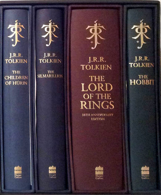
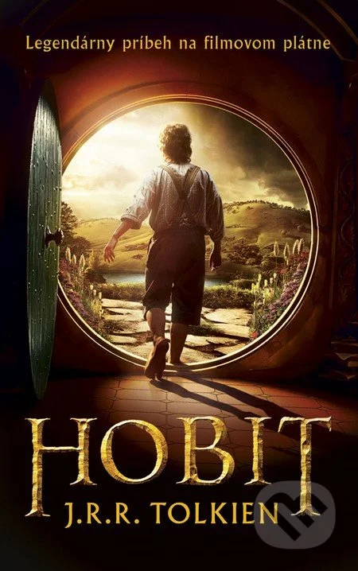
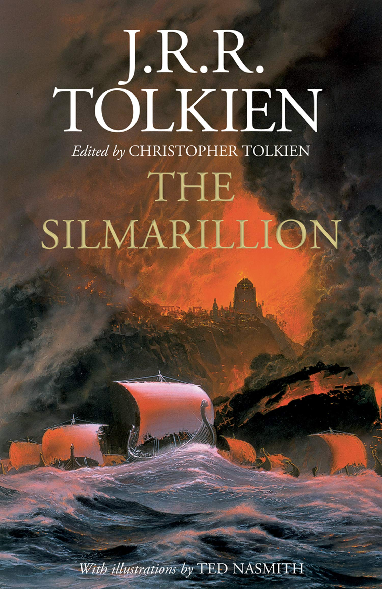

Pán prsteňov

"Pán prsteňov"bol napísaný ako jedna kniha, ale vzhľadom na rozsah pri prvom vydaní bol rozdelený na tri časti - "Spoločenstvo prsteňa", "Dve pevnosti" a "Návrat kráľa". Ako trilógia vychádza dodnes, hoci často v jednom zväzku. Román sa považuje za prvé dielo epického žánru fantasy, ako aj za jeho klasiku.
Tolkien pôvodne nemal v úmysle napísať pokračovanie Hobita (román Pán prsteňov je v skutočnosti takýmto pokračovaním). Avšak 15. novembra 1937 počas obeda so Stanleym Anwinom, majiteľom vydavateľstva Allen & Unwin, ktoré ako prvé vydalo Hobita, bol Tolkien vyzvaný, aby predložil ďalšie diela na posúdenie. Recenzent vydavateľstva Silmarillion odmietol, hoci sa o ňom vyjadril priaznivo. Povzbudený tým začal Tolkien písať pokračovanie Hobita a už 16. decembra 1937 v liste vydavateľovi informoval o prvej kapitole novej knihy.
Anotácia:
"Pán prsteňov od Johna Tolkiena rozpráva príbeh Veľkej vojny o prsteň, vojny, ktorá trvala viac ako tisíc rokov. Ten, kto vlastní Prsteň, získa moc nad všetkými živými i mŕtvymi, ale musí slúžiť Zlu! Frodo, mladý hobit, je predurčený zničiť Prsteň. Vydáva sa na cestu cez Mordor k ohnivej Hore osudu, kam bol prsteň odliaty - len tam, v pekelnej peci, ho možno zničiť. Frodo a jeho priatelia (vrátane elfov, trpaslíkov a ľudí) sa stretávajú so Sauronom, ktorý chce späť svoj drahocenný Prsteň a moc nad svetom.
Hobit

V 30. rokoch 20. storočia bol John R. R. Tolkien profesorom anglosaského jazyka na Oxfordskej univerzite a pre svoje deti skladal rozprávky. Od roku 1920 im písal listy v mene Otca Vianoc s početnými ilustráciami - tie neskôr vyšli v samostatnej knihe. Ďalšou oblasťou jeho tvorivého úsilia bola tvorba diel, na základe ktorých neskôr vznikol Silmarillion.
Tolkien si na vznik Hobita spomenul v liste básnikovi Whistenovi Hughovi Audenovi:
"Jediné, čo si pamätám o tom, kde sa vzal 'Hobit', je, že som sedel a kontroloval školské skúšobné práce, vydaný napospas nevýslovnej únave z tej každoročnej práce, ktorá padá na plecia nemajetných mnohorakých učiteľov. Na čistý list papiera som načmáral: "V diere v zemi žil hobit". Nevedel som prečo, neviem to ani teraz. Dlho som s tým nič nerobil...."
Anotácia:
Kto je hobit? V roku 1937, po vydaní tejto čarovnej rozprávky, si s touto veľmi zaujímavou otázkou lámala hlavu polovica sveta. A pritom je to len tvor malého vzrastu s chlpatými nohami, odvážny, ale dobromyseľný, schopný pohybovať sa veľmi ticho. O dobrodružstvách hobita - Bilba Pytlíka, ako aj jeho priateľov - odvážnych trpaslíkov a čarodejníka Gandalfa, rozpráva táto kniha...
The Silmarillion

Silmarillion je zbierka diel J. R. R. Tolkiena, ktorú po spisovateľovej smrti vydal jeho syn Christopher Tolkien s pomocou spisovateľa fantasy Guya Gavriela Kaya. Je to zbierka mýtov a legiend Stredozeme, ktorá opisuje históriu Ardy od jej vzniku.
Anotácia:
A bolo to tak:
Ten, ktorého elfovia nazývali Iluvatar, stvoril Ainur a oni pred ním stvorili Veľkú pieseň, ktorá sa stala svetlom v temnote a Bytosťou umiestnenou uprostred Prázdnoty.
A stalo sa tak:
Elfovia - Noldor - stvorili Silmarily, najkrajšie zo všetkých vecí, ktoré možno vytvoriť rukami a srdcom. Ale spolu s veľkou krásou prišla aj veľká chamtivosť a veľká zrada....
Kniha o prvom veku Stredozeme. Kniha, ktorá rozpráva nielen príbeh veľkej vojny medzi Svetlom a Temnotou, tisícročia, ktoré otriaslo najväčším svetom v dejinách žánru fantasy, ale aj prehistóriu Prsteňov moci - prsteňov, ktorých putovanie po Stredozemi sa práve začalo.... Čítali ste Pána prsteňov? Potom si prečítajte jeho PREDHISTÓRIU!.....